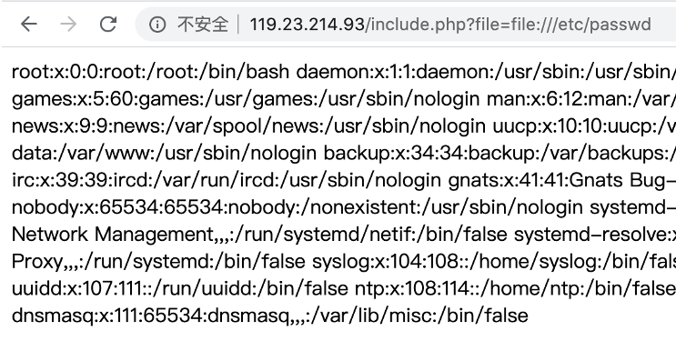

文件包含漏洞概述
什么是文件包含？
开发人员一般会将重复使用的函数写道到单个文件中，需要使用某个函数时直接调用此文件，而无需重新编写。例如
func.php
1 |
|
bob.php
1 |
|
alice.php
1 |
|
这种文件调用的过程一般被称为文件包含
包含函数一共有4个，分别为：include、require、include_once、require_once
主要作用为：包含并运行指定文件，将该文件作为php代码执行
include、require：这两个函数除了处理失败的方式不同之外，几乎完全一样，即如果在包含文件中出错，比如文件不存在等，include只会提出警告，脚本会继续运行；而require在发生错误后会导致脚本停止执行
include_once、require_once：语句在脚本执行期间包含并运行指定文件，此行为和 include、require 语句类似，唯一区别是如果该文件中已经被包含过，则不会再次包含。如同此语句名字暗示的那样，只会包含一次
例如：我们flag.txt里面不是php代码，但它也会照常输出
flag.txt
1 | 我是flag123 |
什么是文件包含漏洞？
如果我们将被包含的文件名设置为一个变量，用来进行动态调用，并且在引入文件的时候，没有对文件名进行一个合理的验证，那么用户就可以随意包含一些预料之外的文件，从而造成文件包含漏洞，导致一些文件泄露甚至恶意代码注入。
include.php
1 |
|
文件包含分类
文件包含分为本地文件包含（LFI）和远程文件包含（RFI）
本地文件包含：包含服务器本身的文件
远程文件包含：包含服务器之外的网络资源（如：通过http协议包含百度的首页）
远程文件包含条件：
（1）allow_url_open=On（默认为On） 规定是否允许从远程服务器或者网站检索数据
（2）allow_url_include=On（php5.2之后默认为Off） 规定是否允许include/require包含远程文件
文件包含漏洞利用
本地文件包含
直接包含或者通过file://

想通过本地文件包含去执行PHP代码，有什么方式？
包含用户上传文件
包含日志文件
web服务器一般会将用户的访问记录保存在访问日志中，那么我们可以根据日志目录的内容构造一个请求，将php代码插入到日志文件中，再通过文件包含漏洞来执行php代码，比如web server的access.log、error.log
怎么将php代码插入到日志文件中？
使用burpsuite
包含日志文件利用条件
（1）对日志文件可读
（2）知道日志文件的存储目录
常包含的日志文件目录
1 | /var/log/apache/access.log |
注意：
（1）一般情况下日志的存储目录会被修改，可以通过读取服务器的配置文件（httpd.conf、nginx.conf…..）来得知
（2）日志记录的信息可以被调整，比如内容格式、记录哪些信息等等
包含session文件
session生命周期：
（1）赋值content
（2）代码运行完之后对session进行一个序列化存储在session文件中
（3）当我们读取session文件时，又会进行一个反序列化将内容读取到内存中
那么我们就可以构造

包含session文件利用条件
（1）找到session内的可控变量
（2）session文件可读写，并且知道存储路径
session文件格式：sess_[PHPSESSID]，默认存储路径
1 | /tmp/ |
PHPSESSID在cookie中可看到
远程文件包含
http://和https://
php伪协议
PHP 提供了一些杂项输入/输出（IO）流，允许访问 PHP 的输入输出流、标准输入输出和错误描述符，内存中、磁盘备份的临时文件流以及可以操作其他读取写入文件资源的过滤器。
作用：访问各个输入/输出流（I/O streams），在CTF中经常使用的是php://filter和php://input
php://filter用于读取源码，php://input用于执行php代码
php://input
可以获取POST原始数据流，当它与包含函数结合时，php://input流会被当作php代码执行
条件：
1 | allow_url_open=On/Off |
利用方式：
1 | ?file=php://input |
php://filter
可以用于获取指定源码，当它与包含函数结合时，php://filter流也会被当作php文件执行，因此我们一般对其进行编码，让其不执行，从而导致任意文件读取
条件：
1 | allow_url_open=On/Off |
利用方式如：
1 | ?file=php://filter/read=convert.base64-encode/resource=index.php |
zip:// (zlib://、bzip2://)
可以访问压缩包里的文件，当它与包含函数结合时，zip://流会被当作php代码执行，从而实现任意代码执行。它不需要指定后缀名，只要是个压缩包即可，后缀名可以随意更改
条件：php>5.2
1 | allow_url_open=On/Off |
利用方式：zip://[压缩包绝对路径]#[压缩包内文件] (#要url编码)
1 | ?file=zip:///var/www/html/upload/phpinfo.jpg%23phpinfo.txt |
phar://
同样可以访问压缩包内容，与zip类似，相对路径和绝对路径都可以使用
条件：php>5.3
1 | allow_url_open=On/Off |
利用方式：
1 | ?file=phar:///Users/glarcy/Sites/include/shell.jpg/shell.txt |
data://
类似php://input，可以让用户来控制输入流，当它与包含函数结合时，用户输入的data://流会被当作php文件来执行，从而导致任意代码执行
条件：php>5.2
1 | allow_url_open=On |
利用方式：
1 | ?file=data://text/plain,<?php phpinfo()?> |
文件包含漏洞绕过
前缀绕过
目录遍历
使用../来返回上一目录，被称为目录遍历，如：file=../../../index.php
测试代码：
1 | $file = $_GET['file']; |
后缀绕过
利用URL
url格式：
1 | protocol://hostname[:port]/path/[?query]#fragment |
测试代码：
1 | $file = $_GET['file']; |
query
1 | 拼接前： |
fragment
1 | 拼接前： |
利用协议
利用zip://和phar://，由于整个压缩包我们可控，那么只要知道它的后缀，我们便可自己构造
测试代码：
1 | $file = $_GET['file']; |
zip://
1 | 拼接前： |
fragment
1 | 拼接前： |
文件包含漏洞防御
（1）不需要使用时，将allow_url_open和allow_url_include设置为Off
（2）设置open_basedir（open_basedir将php所能打开的文件限制在指定的目录树中）
（3）白名单限制包含文件，或者严格过滤./\